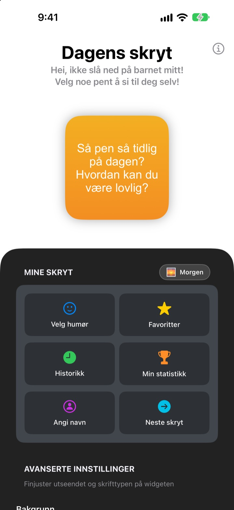
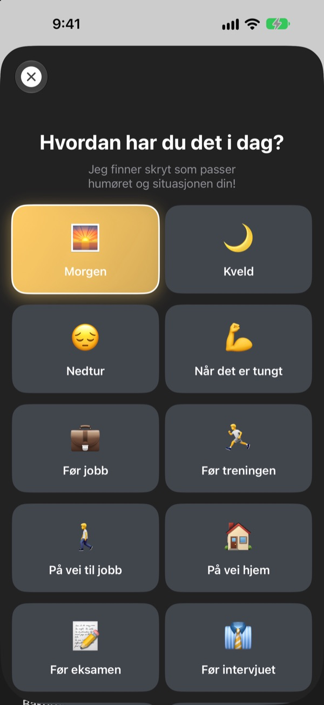
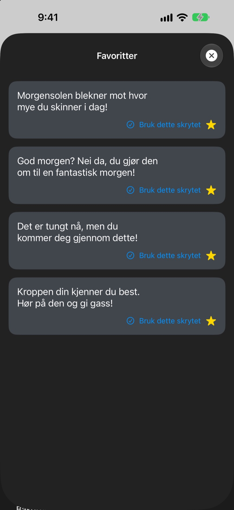
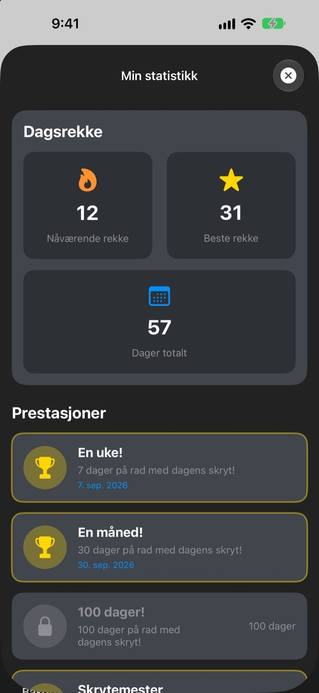

Hver gang du tar opp telefonen,
venter din største fan
Dagens skryt er en widget som med vilje skryter altfor mye av deg. Morgenskryt om morgenen, intervjuskryt før intervjuet. Skrift, farger og bakgrunn velger du selv.
Ett kjøp, og du har alt. Ikke noe abonnement, ingen reklame.

Få litt skryt med en gang
Velg et humør, så viser widgeten skryt som passer. Trykk på Neste skryt for en tilfeldig blant alle 281.
Hvem er din strengeste kritiker? Er det deg selv?
På vei til jobb, før intervjuet, på vei hjem: Stemmen i hodet maser mest. Dagens skryt tar din side fra Hjem-skjermen flere ganger om dagen, og litt mer enn rimelig. I det du drar på smilebåndet, kommer litt av selvtilliten tilbake.
Skryt som passer humøret
Velg blant 14 humør og situasjoner som Morgen, På vei til jobb, Når det er tungt, Før intervjuet eller Før daten, så havner riktig skryt rett på widgeten. Klarer du ikke å velge? Det finnes også Tilfeldig.

Ta vare på favorittene
Trykk på stjernen for å lagre skrytet i Favoritter, og bla tilbake i Historikk. Trykk på Bruk dette skrytet, så havner det rett på widgeten.

Stikk innom hver dag, og se det vokse
Hver dag du titter innom, blir rekken din lengre. Ved 7, 30 eller 100 dager på rad, og ved 50 og 100 dager totalt, låser du opp en prestasjon.

I gang på tre steg
- 1
Velg humør
Åpne
Velg humør, og trykk på det som passer nå. - 2
Tilpass widgeten
Velg skrift, tekstfarge, bakgrunn og oppdateringsintervall i Avanserte innstillinger.
- 3
Legg den på Hjem-skjermen
Hold inne på Hjem-skjermen, trykk på + og finn Dagens skryt.
Slik gjør du widgeten til din
- Skrift
- 13 valg, blant annet Futura, Georgia og Marker Felt
- Tekstfarge
- Den fargen du liker
- Bakgrunn
- En fargegradient i to farger eller et av de innebygde bildene
- Justering
- Venstre, midtstilt eller høyre
- Linjeavstand
- Tettere eller luftigere linjer
- Oppdateringsintervall
- Nytt skryt hvert 5., 15. eller 30. minutt
Størrelsen på widgeten velger du når du legger den til på Hjem-skjermen.
Kjøp den én gang, så er det gjort
Appen
- 281 skryt for 14 humør
- En Hjem-skjerm-widget i din stil
- Favoritter og Historikk
- Rekker og prestasjoner
Støtt utvikleren
- Velg en liten, middels eller stor tips
- Den låser ikke opp noe. Det er bare en måte å si takk på
Bare hvis og når du har lyst.
Ikke noe abonnement, ingen ekstrakjøp, ingen reklame.
Vanlige spørsmål
Hvordan legger jeg til widgeten?
Hold inne på et tomt sted på Hjem-skjermen til symbolene vrikker, trykk på + øverst, søk etter Dagens skryt og velg en størrelse.
Hvordan velges neste skryt?
Når du velger et humør, havner et skryt for det rett på widgeten. Deretter viser widgeten et tilfeldig skryt blant alle 281 i intervallet du har valgt. I appen kan du også trykke på Neste skryt for å bytte selv.
Kan jeg endre skrift eller oppdateringsintervall?
Ja. I Avanserte innstillinger endrer du skrift, tekstfarge, bakgrunn, justering, linjeavstand og oppdateringsintervall: 5, 15 eller 30 minutter.
Widgeten endret seg ikke med en gang.
Det er iOS som bestemmer når widgeter tegnes på nytt, så den kan henge litt etter intervallet du valgte. Åpne appen og lukk den igjen, så oppdateres widgeten.
Hvordan fungerer rekken?
Hver dag på rad du ser et skryt, legger en dag til rekken. Under Min statistikk ser du nåværende rekke, rekorden din, totalt antall dager og prestasjonene dine.
Favorittene og historikken min er borte.
Alt lagres bare på enheten din og blir ikke med hvis du sletter appen eller bytter telefon. Har du ikke slettet noe og det likevel er borte, send oss en e-post.
Blir dataene mine sendt noe sted?
Nei. Appen samler ikke inn personopplysninger. Favorittene og historikken din blir på enheten din.
Hvordan melder jeg fra om en feil eller foreslår noe?
Rett via Kontakt utvikleren i appen, på e-post eller i en DM på Instagram til @lee25_ios. Vi svarer så snart vi har sett det.
Spørsmål eller idéer? Skriv til leeo@kakao.com.